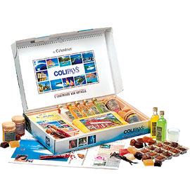

Aquarelles de Claire Dardel
1997
← Pause JMJ
La rentrée des Tamarins →
Décidément, les premiers sites sont picturaux, voici une nouvelle page web de peintures au thème encore plus réunionnais, par une réunionnaise qui plus est. évidement l'artiste peintre est une femme: Claire Dardel.
Après Sophie Bazin c'est la deuxième artiste peintre que je présente en seulement quatre sites.
De la toile à la boite de chocolat
Depuis 1997, Claire Dardel a grandi, Sa collection aussi a grandi avec de nouvelles aquarelles à montrer. Les aquarelles ont d'ailleurs changé de site qui a aujourd'hui disparu à son tour.
Mais On les retrouve aussi maintenant sur certaines boites de chocolats vendus par Colipays et qui sont vendues comme collectors. Il faut dire que les façades de cases créoles qui sont la spécialité de Claire sont une illustration parfaite pour des produits de la Réunion.

On voit mal le chocolat pays enveloppé dans une scène d'hiver de Brügel ou des dessins du père noël. D'autant plus qu'ici Noël a lieu en été.
- Voir aussi les autres sites d'artistes Peinture & sculpture